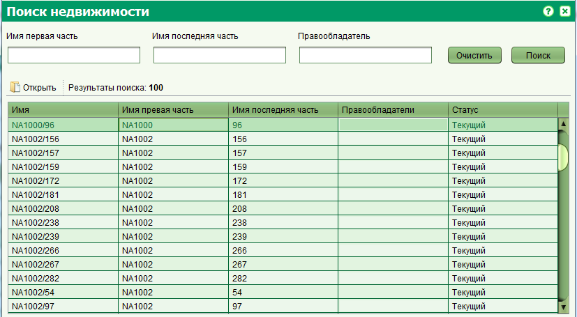

Форма поиска недвижимости позволяет осуществлять поиск объектов недвижимости для дальнейшего редактирования или просмотра.
Вы можете открыть ее через главное меню Поиск > Поиск недвижимости или щелкнув на соответствующую кнопку на панели инструментов


Вы можете осуществлять поиск по комбинации первой и последней части идентификатора недвижимости, а также по имени правообладателя.
Все поля поддерживают поиск по частичному совпадению с введенными значениями.
Для просмотра данных о недвижимости, выберите ее из результатов поиска и нажмите кнопку "Открыть" на панели инструментов, расположенной над результатами поиска.